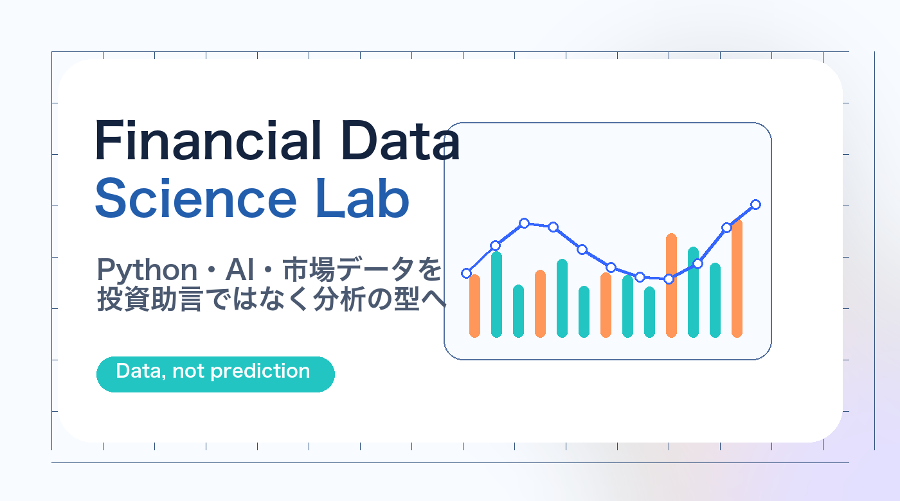

BTC日次リターン統計レポート
日次リターン、平均、標準偏差、最大下落、分布をグラフで確認する、初心者向けの統計レポート。
Python × AI × Market Data
CSV、API、取引履歴、バックテスト結果をPythonで整形・集計・可視化し、AIで学習用レポートへ変換するための金融データ分析ラボです。

Policy
このサイトでは、特定銘柄の購入・売却を推奨しません。扱うのは、データ取得、前処理、可視化、バックテスト結果の読み方、AIによる要約、レポート作成の型です。
相場予想ではなく、金融データを再現可能な手順で扱えるようにすることを目的にしています。
Reports
日次リターン、平均、標準偏差、最大下落、分布をグラフで確認する、初心者向けの統計レポート。
価格データを時間帯別に集計し、大きな変動が出やすい時間を学習用に可視化する型。
勝率、PF、最大DD、サンプル数、ルックアヘッド疑いをチェックするレビュー手順。
Library
Python × Market Data × AI
Python金融データ分析、時系列、先読みバイアス、AIエージェント、発信戦略まで、残っていた教材をまとめました。
Articles
AI × Project Design
AI、Python、金融データ分析への興味を、発信・教材・商品化につながるプロジェクトへ変えるための記事です。
Offer
CSV整形チェックリスト、Python分析テーマ設計、AI要約プロンプトをまとめた低価格商品。
金融データの取得から可視化、AI要約、note/YouTube化まで学ぶ中価格講座。
取引履歴、バックテスト結果、APIデータの整理・可視化・レポート化を支援。
本サイトの内容は、金融市場データの整理・分析手順の学習を目的としたものです。特定の金融商品、暗号資産、通貨、銘柄の購入・売却を推奨するものではありません。投資判断は必ずご自身の責任で行ってください。
Start
CSV、API、取引履歴、バックテスト結果。最初はひとつで十分です。データを選び、前処理し、グラフにして、AIに要約させる。そこから金融データ分析の型が始まります。
スターターキットを見る